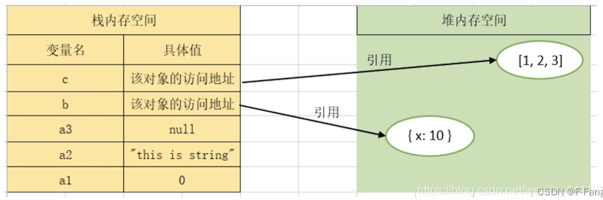

一、数据类型
JS中的每一个值都属于一种数据类型，一共有六种：
- （1）数值（number）：整数和小数；（2）字符串（string）：文本；（3）布尔值（boolen）：表示真伪的两个特殊值，true/false；（4）undefined：表示未定义或者不存在；（5）null：表示空值；（5）对象（object）：各种值的合成；（ES6又添加了两种数据类型，Symbol：独一无二的值；和BigInt：任何位数的整数）
- 根据这些数据类型的定义也能看出，他们通常分为两大类，number、string、boolen、undefined、null、symbol和bigint合称为“原始类型”（primitive type），也称作基本数据类型，即他们是最基本的数据类型，不能再细分了；而object对象则称作“合成类型”（complex type），也称作引用数据类型，因为一个对象往往是多个原始类型的值合成的，而一般用的数组（array）、日期（date）等等都是对象，所以也是引用数据类型。
二、数据结构
堆（heap） 是一种非连续储存的树形数据结构，每一个节点一个值，整棵树是经过排序的，特点是根节点的值最小（或最大），且节点的两个字数也是一个堆，常用来实现优先队列。例如二叉树。
栈（stack） 是一种连续储存的数据结构，具有先进后出的性质。通常的操作有入栈（压栈），出栈和栈顶元素，要读取某个元素，需要将栈顶元素和其之间的所有元素出栈才能完成。
三、内存：堆内存（heap）和栈内存（stack）
- 堆内存：一般为程序员手动分配和释放，在程序结束后可能由操作系统自动释放，（Java有自动回收机制，而C++需要手动释放），通常用new关键字来分配，允许程序在运行时动态地申请某个大小的内存空间。是不连续的内存区域，分配的速度较慢，但比较灵活，获得的空间较大。
- 栈内存：为编译器自动分配和释放，如函数参数、局部变量、临时变量等等；是一块连续的内存区域，分配的速度较快，大小通常是系统预设好的，所以能从栈内存获得的空间较小。
- 除了这两部分，还有静态存储区：内存在程序编译的时候就已经分配好了，这块内存在整个运行期间都存在，主要存放静态数据、全局变量和一些常量。
四、JS不同数据类型变量的存储方法
- 原始类型数据，包括Number、String、Boolen等，在栈内存中直接存储变量名和值；
- 而合成类型数据，对象Object的真实数据存储在堆内存中，它在栈内存中存储的是变量名和堆内存的位置。（“引用类型”这个名称可以体现出这种数据类型的特点，引用了堆内存的地址）
例如： 
1
2
3
4
5let a1 = 0 //栈内存
let a2 = "String" //栈内存
let a3 = null //栈内存
let b = { x :10 } //变量名b和值地址存在栈中，{x : 10}作为对象存在堆中
let c =[ 1, 2, 3 ] //变量名c和值地址存在栈中，[ 1, 2, 3 ]作为对象存在堆中
五、不同数据类型变量的拷贝
基础类型变量的拷贝，是在栈内存中新增一个储存空间来存放数值，两个变量是相互独立的，例如：
1
2
3
4
5
6
7
8> let a = 1
> let b = a
> b
1
> b =2 //改变变量b的值
2
> a //变量a还是原值
1合成类型数据例如对象，拷贝后的不同变量之间是共享一个值地址，更改属性值只是更改了堆内存中的值，栈内存的不同变量名还是指向同一个堆内存地址，例如：
1
2
3
4
5
6> let a1 = {"a1" : 1}
> let b1 = a1
> b1.a1 = 2 //改变变量b1其中一个属性的值
2
> a1 //变量a1的该属性值更改
{ a1: 2 }
通过数组的forEach方法来进一步分析，先来看一个例子： 1
2
3
4
5> let info=[1,2,3,4,5];
> info.forEach( item =>{
item = 10;
});
console.log(info); // [1,2,3,4,5]
forEach方法没有返回值，只是操作数据，遍历数组的每一项，在使用forEach方法时对数组中每个数据都创建了一个拷贝变量item，我们之后操作item变量。对于基础类型数据，item变量就是新创建的一个内存，item变量的改变并不影响原变量info地址值的改变，例如例子中item分布是1、2、3等等；但是当item变量对应的是合成类型时，item存储的是一个引用地址，操作它更改的是对应的堆内存！例如：
1 | > let info=[{age:1},{age:2},{age:3},{age:4},{age:5}]; |
所以forEach方法对于存储了基本数据类型的数组，是不能更改原数据的，但对于元素含有引用数据类型时，因为拷贝了地址值变量，会直接更改堆内存，所以原数据的地址值指向的数值改变了，因此改变了原数据。多多品味一下其中的差别，主要是弄清楚在forEach方法中变量拷贝时发生了什么。
六、对象拷贝的方法
1、浅拷贝和深拷贝
对象（Object、Array）克隆或者拷贝时，分为浅拷贝和深拷贝
浅拷贝只是复制指向某个对象的指针，而不复制对象本身，新旧对象还是共享同一块内存；但深拷贝会另外创造一个一模一样的对象，新对象跟原对象不共享内存，修改新对象不会改到原对象。
2、赋值和浅拷贝的区别
- 当我们把一个对象赋值给一个新的变量时，赋的其实是该对象的在栈中的地址，而不是堆中的数据。也就是两个对象指向的是同一个存储空间，无论哪个对象发生改变，其实都是改变的存储空间的内容，因此，两个对象是联动的。
- 浅拷贝是按位拷贝对象，它会创建一个新对象，这个对象有着原始对象属性值的一份精确拷贝。如果属性是基本类型，拷贝的就是基本类型的值；如果属性是内存地址（引用类型），拷贝的就是内存地址 ，因此如果其中一个对象改变了这个地址，就会影响到另一个对象。即默认拷贝构造函数只是对对象进行浅拷贝复制(逐个成员依次拷贝)，即只复制对象空间而不复制资源。 具体案例请参考：浅拷贝和深拷贝
3、如何进行深拷贝？
ES6新增的拓展运算符(…)可以实现浅拷贝和深拷贝
如果只是一层数组或是对象，其元素只是简单类型的元素，那么属于深拷贝（就是一层拷贝，暂时就理解为深拷贝吧！！！！）
1 | let aa = { |
如果数组或对象中的元素是引用类型的元素，那么就是浅拷贝
1 | let aa = { |
如何深拷贝？
1）递归方法，遍历对象、数组直到里面都是基本数据类型
1 | let aa = { |
2）利用JSON.parse(JSON.stringify(xxx))来实现深拷贝
注意：JSON.parse(JSON.stringify(xxx))的方法，如果变量中含有Promise对象，则不可以使用该方法
七、R语言的变量赋值与绑定
在R中赋值本质上是把一个存储的对象与一个变量名“绑定”(bind)在一起， 比如：
1 | x <- c(1,2,3) |
并不是像C++、JAVA等语言那样， x代表某个存储位置，
“x <- c(1,2,3)”代表将1到3这些值存储到x所指向的存储位置。
实际上，<-右边的c(1,2,3)是一个表达式，
其结果为一个R对象(object)， 而x只是一个变量名，
并没有固定的类型、固定的存储位置，
赋值的结果是将x绑定到值为(1,2,3)的R对象上。
R对象有值，但不必有对应的变量名；
变量名必须经过绑定才有对应的值和存储位置。
这样，同一个R对象也可以被两个或多个变量名绑定。
对于基本的数据类型如数值型向量，
两个指向相同对象的变量当一个变量被修改时自动制作副本。 tracemem(x)可以显示变量名x绑定的地址并在其被制作副本时显示地址变化。
如：
1 | x <- c(1,2,3) |
可见y <- x并没有制作副本，
但是修改y[3]值时就对y制作了副本。
修改某个变量名所指向的对象可能会制作副本，如：
1 | x <- c(1,2,3) |
在调用函数时， 如果函数内部不修改自变量的元素值， 输入的自变量并不制作副本， 而是直接被函数使用实参绑定的对象。 如：
1 | x <- c(1,2,3) |
从上面的例子可以看出， 函数f以x为实参，
但不修改x的元素， 不会生成x的副本，
返回的值是x指向的对象本身， 再次赋值给z，
也不制作副本， z和x绑定到同一对象。
如果函数内部修改自变量的元素值， 则输入的自变量也会制作副本。 如：
1 | x <- c(1,2,3) |
从程序输出看， 函数f2()以x为实参，
并修改x的内部元素， 就制作了x的副本，
返回的结果赋给变量z， 绑定的是修改后的副本。
如果在函数中对自变量重新赋值， 这实际是重新绑定， 也不会制作输入的实参的副本。
如果修改y的元素值时还修改了其存储类型，
比如整型改为浮点型， 则会先制作y的副本，
然后制作类型改变后的副本， 然后再修改其中的元素值。
在当前的R语言中， 一个对象的引用（如绑定的变量名）个数，
只区分0个、1个或多个这三种情况。 在没有引用时，
R的垃圾收集器会定期自动清除这些对象。 rm(x)只是删除绑定，
并不会马上清除x绑定的对象。 如果已经有多个引用，
即使是只有2个， 减少一个引用也还是“多个”状态， 不会变成1个。
垃圾收集器是在R程序要求分配新的对象空间时自动运行的，
R函数gc()可以要求马上运行垃圾收集器，
并返回当前程序用到的存储量；
lobstr包的mem_used()函数则报告当前会话内存字节数。
在上面的示例中， 用了基本类型的向量讲解是否制作副本。 考虑其它类型的复制。
如果x是一个有5个元素的列表，
则y <- x使得y和x指向同一个列表对象。
但是， 列表对象的每个元素实际上也相当于一个绑定，
每个元素指向一个元素值对象。
所以如果修改y：y[[3]] <- 0，
这时列表y首先被制作了副本，
但是每个元素指向的元素值对象不变，
仍与x的各个元素指向的对象相同；
然后， y[[3]]指向的元素值进行了重新绑定，
不再指向x[[3]]， 而是指向新的保存了值0的对象，
但y的其它元素指向的对象仍与x公用。
列表的这种复制方法称为浅拷贝， 列表对象及各个元素绑定被复制，
但各个元素指向（保存）的对象不变。 这种做法节省空间也节省运行时间。
在R的3.1.0之前则用的深拷贝方法，
即复制列表时连各个元素保存的值也制作副本。
如果x是一个数据框， 这类似于一个列表，
每个变量相当于一个列表元素， 数据框的每一列实际绑定到一个对象上。
如果y <- x，
则修改y的某一列会对y进行浅拷贝，
然后仅该列被制作了副本并被修改，
其它未修改的列仍与x共用值对象。
但是如果修改数据框y的一行， 因为这涉及到所有列，
所以整个数据框的所有列都会制作副本。
对于字符型向量， 实际上R程序的所有字符型常量都会建立一个全局字符串池， 这样有许多重复值时可以节省空间。
用lobstr包的obj_size()函数可以求变量的存储大小，
如obj_size(x)， 也可以求若干个变量的总大小，
如obj_size(x,y)。 因为各种绑定到同一对象的可能性，
所以变量的存储大小可能会比想象要少， 比如， 共用若干列的两个数据框，
字符型向量， 等等。
基本R软件的object.size()则不去检查是否有共享对象，
所以对列表等变量的存储大小估计可能会偏高。
从R 3.5.0版开始，1:n这种对象仅保存其开始值和结束值。
在自定义函数时， 自变量通常是按引用使用的， 函数内部仅使用自变量的值而不对其进行修改时不会制作副本， 但是如果函数内部修改了自变量的值， 就会制作副本， 所以如果自变量的存储量很大而且被修改后返回， 调用这个函数时就会造成运行速度缓慢。 在函数内应慎重修改自变量的值。
在循环中修改数据框的列， 也会造成反复的复制。